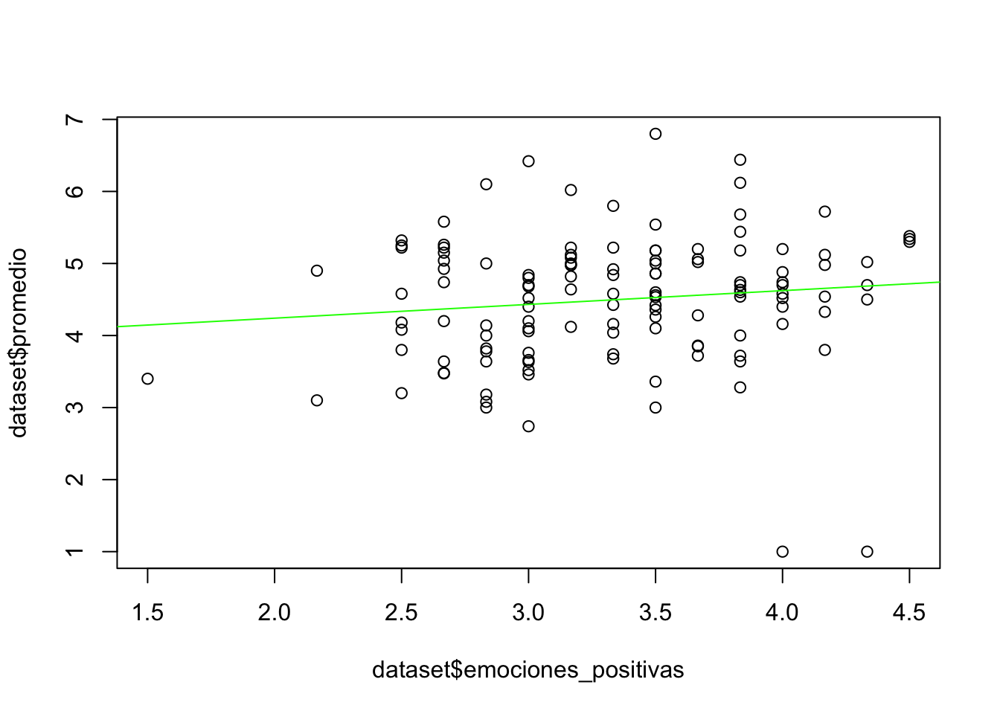
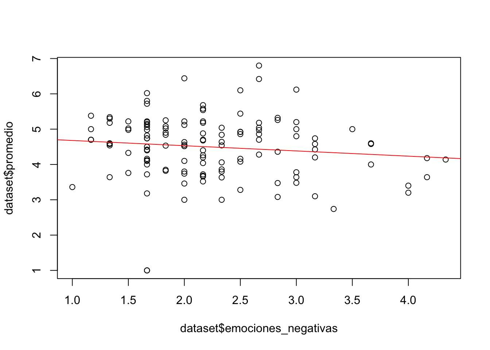

Capítulo 2 R en Acción: Analizando un Ejemplo
R es una herramienta de análisis muy poderosa. El propósito de este capítulo es principalmente mostrar algunas de las cosas que puede hacer R. Si bien explico los objetivos del análisis de datos para cada parte junto con el código utilizado, la idea principal es ilustrar algunas de sus funcionalidades y no explicar el código de forma extensa. Para eso, está el resto de las secciones del libro.
2.1 Cargando una Base de Datos desde la Web
Primero que todo, un breve resumen de la base de datos que utilizaremos en este capítulo. La base contiene datos sociodemográficos, calificaciones de cinco cursos y respuestas a preguntas sobre emociones en el contexto académico de 137 estudiantes de psicología de una universidad pública chilena. De este modo, lo que vamos a hacer es cargar la base de datos para ejecutar nuestros ejemplos. Para esto, vamos a darle un nombre o etiqueta a nuestra base de datos dataset, luego utilizaremos el operador de asignación <- y al lado derecho usaremos la función read.csv() de R, el cual permite leer la base de datos llamada emociones_academicas.csv. Si deseas ejecutar el código contenido en este ejemplo, primero debes tener instalado en tu computador el lenguaje de programación R y RStudio (Para más información ir al capítulo 3, donde están las instrucciones paso a paso de cómo hacer esto). Volviendo al archivo csv, nótese que la base de datos está alojada en una página web y no en nuestro computador personal. Esto ya en sí mismo muestra una de las ventajas de R por sobre otros software de análisis de datos tales como SPSS. Inmediatamente abajo del código para cargar la base de datos, utilizaremos la función names para observar el nombre de las variables contenidas en la base de datos, el cual se encuentra impreso justo debajo de la celda.
dataset <- read.csv("https://raw.githubusercontent.com/danielivanperez/dataset_ejemplo_libro_r/main/emociones_academicas.csv")
names(dataset)## [1] "participante" "edad" "sexo" "Nivel" "calificacion_1"
## [6] "calificacion_2" "calificacion_3" "calificacion_4" "calificacion_5" "promedio"
## [11] "emo_aca_1" "emo_aca_2" "emo_aca_3" "emo_aca_4" "emo_aca_5"
## [16] "emo_aca_6" "emo_aca_7" "emo_aca_8" "emo_aca_9" "emo_aca_10"
## [21] "emo_aca_11" "emo_aca_12"Para saber el tamaño de nuestra base de datos, podemos utilizar la función dim(), la cual nos entrega el número de filas y columnas respectivamente. Apliquemos dicha función a la base de datos recién cargada.
dim(dataset)## [1] 137 22La salida nos dice que hay 137 filas (participantes en nuestro caso) y 22 columnas (o variables). Adicionalmente, una de las funciones más útiles de R es poder observar un conjunto acotado de filas, observaciones o, en nuestro caso participantes, de la base de datos a analizar. Para esto, vamos a usar la función head(). Al ejecutar esta función, R nos muestra las primeras 6 filas de la base de datos.
head(dataset)## participante edad sexo Nivel calificacion_1
## 1 1 19 Femenino 201 4.8
## 2 2 20 Femenino 201 Psicología del desarrollo infanto juvenil 4.7
## 3 3 20 Femenino 201 Desarrollo infanto-juvenil 3,9
## 4 4 20 Femenino 201 Metodologia de la investigación en psicología 38
## 5 5 24 Femenino 302 Psicología educacional 5.0
## 6 6 19 Femenino 201 neuropsicología 37
## calificacion_2 calificacion_3
## 1 3.4 4.6
## 2 Psicología Comunitaria 4.0 Teoría Psicoanalítica 3.2
## 3 Teorias cognitivas 4,9 Metodologia de investigacion 4,8
## 4 Teoria del desarrollo infanto juvenil 53 Teorias cognitivas 48
## 5 Tecnicas proyectivas 6.5 Gestion de personas y desarrollo organizacional 6.3
## 6 metodología de la investigacion en psicologia 30 infanto juvenil 47
## calificacion_4
## 1 3.8
## 2 Teorías cognitivas 3.2
## 3 Psicología comunitaria 4,1
## 4 Psicología comunitaria 33
## 5 Construcción de pruebas e instrumentos de evaluación 5.6
## 6 psicología comunitaria 52
## calificacion_5 promedio emo_aca_1 emo_aca_2 emo_aca_3 emo_aca_4
## 1 3.6 NA 4 2 3 2
## 2 Metodologías de investigación en psicología 3.3 NA 4 1 3 3
## 3 Teoria psicoanalitica no NA 4 3 3 4
## 4 Psicoanalítica 38 NA 3 3 2 3
## 5 psicopatologia infanto juvenil 5.0 NA 3 1 4 4
## 6 psicoanalisis 37 NA 3 1 3 4
## emo_aca_5 emo_aca_6 emo_aca_7 emo_aca_8 emo_aca_9 emo_aca_10 emo_aca_11 emo_aca_12
## 1 3 2 4 2 3 2 3 3
## 2 4 1 2 3 4 1 3 4
## 3 3 3 4 2 3 4 3 3
## 4 2 4 3 3 3 2 3 4
## 5 4 1 4 1 4 2 4 4
## 6 4 1 3 2 3 1 2 52.2 Seleccionando Columnas en una Base de Datos
El código de arriba nos muestra las respuestas de los primeros 6 sujetos de nuestra base de datos. Podemos fácilmente ver que la salida o output que nos da R es relativamente extensa. Sería muy ineficiente siempre estar imprimiendo bases de datos de forma completa. Por esta razón, es mucho mejor trabajar viendo un número limitado de variables al mismo tiempo. Empecemos con el caso más simple de explorar solo una variable. A continuación, vamos a mostrar cómo utilizar el símbolo dólar $, el cual nos permite seleccionar una columna o variable de la base de datos. Para proseguir con el ejemplo, nos centraremos en la variable calificacion_1. De este modo, primero escribimos el nombre de la base de datos, seguido del signo dólar y, luego, seleccionar o escribir el nombre de la variables deseada (nótese que seguimos utilizando la función head() con el objetivo de tener solo 6 filas en la salida de R).
head(dataset$calificacion_1)## [1] "4.8" "Psicología del desarrollo infanto juvenil 4.7 "
## [3] "Desarrollo infanto-juvenil 3,9" "Metodologia de la investigación en psicología 38"
## [5] "Psicología educacional 5.0" "neuropsicología 37"La salida de R nos muestra las primeras 6 filas de la variable calificacion_1. Para mencionar otra forma útil de selección de columnas que usaremos más abajo, está elegir un rango de columnas como por ejemplo:
head(dataset[5:9]) ## calificacion_1 calificacion_2
## 1 4.8 3.4
## 2 Psicología del desarrollo infanto juvenil 4.7 Psicología Comunitaria 4.0
## 3 Desarrollo infanto-juvenil 3,9 Teorias cognitivas 4,9
## 4 Metodologia de la investigación en psicología 38 Teoria del desarrollo infanto juvenil 53
## 5 Psicología educacional 5.0 Tecnicas proyectivas 6.5
## 6 neuropsicología 37 metodología de la investigacion en psicologia 30
## calificacion_3
## 1 4.6
## 2 Teoría Psicoanalítica 3.2
## 3 Metodologia de investigacion 4,8
## 4 Teorias cognitivas 48
## 5 Gestion de personas y desarrollo organizacional 6.3
## 6 infanto juvenil 47
## calificacion_4
## 1 3.8
## 2 Teorías cognitivas 3.2
## 3 Psicología comunitaria 4,1
## 4 Psicología comunitaria 33
## 5 Construcción de pruebas e instrumentos de evaluación 5.6
## 6 psicología comunitaria 52
## calificacion_5
## 1 3.6
## 2 Metodologías de investigación en psicología 3.3
## 3 Teoria psicoanalitica no
## 4 Psicoanalítica 38
## 5 psicopatologia infanto juvenil 5.0
## 6 psicoanalisis 37Podemos inferir del código escrito arriba que R le asigna un número a cada una de las columnas de la base de datos empezando desde 1. Al interior del paréntesis cuadrado, le pedimos a R que seleccione desde la columna 5 hasta la columna 9 y que nos muestre sólo estas columnas o variables. De este modo, R muestra los valores desde la variable calificacion_1 hasta calificacion_5.
2.3 Limpiando Valores en una Base de Datos
Volviendo al caso, como podemos ver en las primeras 6 filas de la variable calificacion_1, a los participantes se les pidió escribir sus calificaciones para un curso determinado. Podemos observar que ellos escribieron sus respuestas de diferentes formas. Por ejemplo, escribiendo solo la calificación como en el primer caso, o incluso escribiendo el nombre del curso de manera completa y luego la calificación, en otros casos con un . como en la fila [1], con una , como en la fila [3] o simplemente sin punto ni coma como en la fila [6]. Esto constituiría un primer problema para el analista de datos debido a que no tenemos los valores ordenados y formateados de manera estándar (por ejemplo, tener solo números dos números separados por un .) al interior de la variable. Justamente en este tipo de situaciones es cuando R muestra todo su poder y utilidad.
Como en cada respuesta o celda de la columna tenemos una combinación de texto y números, voy a aplicar una función en R para que transforme todo lo que haya en sus celdas a un tipo de formato llamado character o carácter, el cual se refiere a que la información dentro de cada celda es simplemente texto (en R hay diferentes tipos de datos como los numéricos o numeric). Esto lo hago principalmente para proceder de manera ordenada y evitar posibles errores en el futuro al ejecutar código.
dataset[5:9] <- lapply(dataset[5:9], as.character) # transformar los datos a caracteresDe forma muy resumida, el código de arriba lo que hizo fue aplicar una función que transforma el tipo de datos de cada celda a caracteres a un set de columnas definida desde [5:9] (es decir, desde calificacion_1 a calificacion_5) de la base de datos dataset. Nótese que en la segunda parte del código hay un signo hashtag #, el cual le dice a R que todo lo que está después de dicho símbolo no debe ser ejecutado. El # lo usamos cuando queremos escribir comentarios junto al código para describir qué fue lo que hicimos como una ayuda de memoria (luego de un par de días, semanas o meses, esto será de mucha ayuda) o para explicarle a alguien cada paso del código.
Ahora bien, lo que haremos a continuación es eliminar todo lo que no sea números (letras, puntuaciones, etc.) para las variables calificacion_1 a calificacion_5 y, obviamente, dejar solo números o calificaciones en las celdas. Para esto, utilizaremos el código que está abajo, el cual es aplicado a cada una de las calificaciones existentes en la base de datos con el fin de. hacer más comprensible el ejemplo.
dataset$calificacion_1 <- gsub("[^0-9]", "", dataset$calificacion_1)
dataset$calificacion_2 <- gsub("[^0-9]", "", dataset$calificacion_2)
dataset$calificacion_3 <- gsub("[^0-9]", "", dataset$calificacion_3)
dataset$calificacion_4 <- gsub("[^0-9]", "", dataset$calificacion_4)
dataset$calificacion_5 <- gsub("[^0-9]", "", dataset$calificacion_5)Si ejecutamos los nuevos valores contenidos en las columnas 5 a 9, observaremos que solo hay números en las celdas.
head(dataset[5:9])## calificacion_1 calificacion_2 calificacion_3 calificacion_4 calificacion_5
## 1 48 34 46 38 36
## 2 47 40 32 32 33
## 3 39 49 48 41
## 4 38 53 48 33 38
## 5 50 65 63 56 50
## 6 37 30 47 52 37En esta etapa, los valores ya empiezan a estar mucho más ordenados y cada vez están más cerca del formato final que deseamos para ejecutar algunos análisis de datos de utilidad. Sin embargo, todavía tenemos, al menos, dos problemas. El primero es que las calificaciones deberían tener un punto . entremedio de ambos números y, en segundo lugar, que no debemos olvidar que el contenido de las celdas está almacenado como caracteres y no como números. Es muy importante que nuestras variables sean leídas por R como variables numéricas para proceder con la aplicación de funciones cuantitativas. Por ejemplo, si las variables están formateadas como caracteres y queremos aplicar la función de media aritmética, R imprimirá un mensaje de error. De este modo, lo primero que haremos es resolver el problema del punto entre ambos números. Para esto, usaremos el código que esta abajo. Nótese que cada función se ha aplicado a cada una de las cinco variables por separado con el fin de que el ejemplo sea más entendible.
dataset$calificacion_1 <- sub("(?<=^.)", "\\.", dataset$calificacion_1 , perl=TRUE)
dataset$calificacion_2 <- sub("(?<=^.)", "\\.", dataset$calificacion_2 , perl=TRUE)
dataset$calificacion_3 <- sub("(?<=^.)", "\\.", dataset$calificacion_3 , perl=TRUE)
dataset$calificacion_4 <- sub("(?<=^.)", "\\.", dataset$calificacion_4 , perl=TRUE)
dataset$calificacion_5 <- sub("(?<=^.)", "\\.", dataset$calificacion_5 , perl=TRUE)head(dataset[5:9])## calificacion_1 calificacion_2 calificacion_3 calificacion_4 calificacion_5
## 1 4.8 3.4 4.6 3.8 3.6
## 2 4.7 4.0 3.2 3.2 3.3
## 3 3.9 4.9 4.8 4.1
## 4 3.8 5.3 4.8 3.3 3.8
## 5 5.0 6.5 6.3 5.6 5.0
## 6 3.7 3.0 4.7 5.2 3.7Genial, ahora cada una de las calificaciones tiene un punto que separa ambos valores. Pero aún queda un problema más por resolver: cambiar el contenido de la celda de carácter a número. Para ilustrar de forma más clara el problema, imaginemos que queremos saber la media aritmética de la variable calificacion_1:
mean(dataset$calificacion_1, na.rm = TRUE) # na.rm = True descarta las celdas sin valores ## Warning in mean.default(dataset$calificacion_1, na.rm = TRUE): argument is not numeric or logical:
## returning NA## [1] NAEl mensaje de error dice lo siguiente: “argument is not numeric or logical: returning NA[1] NA”. Básicamente lo que está sucediendo aquí es que R no puede aplicar una operación matemática a texto o caracteres. Para solucionar esto, solo debemos ejecutar el siguiente código que transformará el texto a números.
dataset[5:9] <- lapply(dataset[5:9], as.numeric) # Convertir columnas de 5 a 9 a numerosAhora apliquemos nuevamente la función de media aritmética a la variable calificacion_1 y veamos qué sucede:
mean(dataset$calificacion_1, na.rm = TRUE)## [1] 4.38176Al fin hemos obtenido el valor promedio para esa columna el cual corresponde a 4.38176. Esto quiere decir que los valores de las columnas están listas para ser analizadas cuantitativamente.
2.4 Creación de Variables a partir de Otras
dataset$promedio <- rowMeans(dataset[,5:9], na.rm=TRUE)dataset$emociones_positivas <- rowMeans(dataset[,c("emo_aca_1","emo_aca_3","emo_aca_5","emo_aca_7", "emo_aca_9","emo_aca_11")], na.rm=TRUE)
dataset$emociones_negativas <- rowMeans(dataset[,c("emo_aca_2","emo_aca_4","emo_aca_6","emo_aca_8", "emo_aca_10","emo_aca_12")], na.rm=TRUE)2.5 Graficando Datos
barplot(table(dataset$emociones_positivas)) #both columns need to be integer
plot(dataset$emociones_positivas, dataset$promedio) #both columns need to be integer
require(stats)
reg<-lm(dataset$promedio ~ dataset$emociones_positivas, data = dataset)
plot(dataset$emociones_positivas, dataset$promedio)
abline(reg, col = "green")
reg##
## Call:
## lm(formula = dataset$promedio ~ dataset$emociones_positivas,
## data = dataset)
##
## Coefficients:
## (Intercept) dataset$emociones_positivas
## 3.8581 0.1914require(stats)
reg_1<-lm(dataset$promedio ~ dataset$emociones_negativas, data = dataset)
plot(dataset$emociones_negativas, dataset$promedio)
abline(reg_1, col = "red")
reg_1##
## Call:
## lm(formula = dataset$promedio ~ dataset$emociones_negativas,
## data = dataset)
##
## Coefficients:
## (Intercept) dataset$emociones_negativas
## 4.828 -0.148